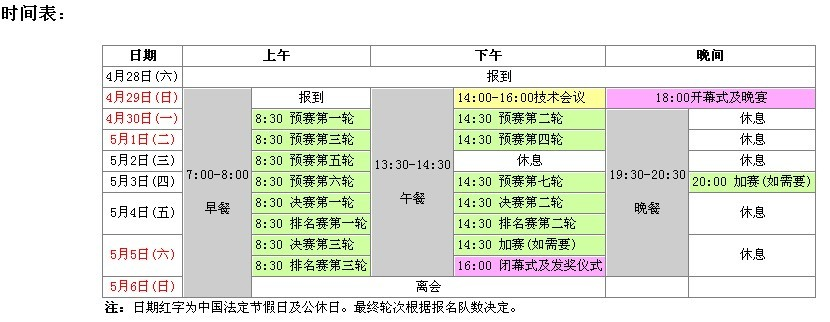
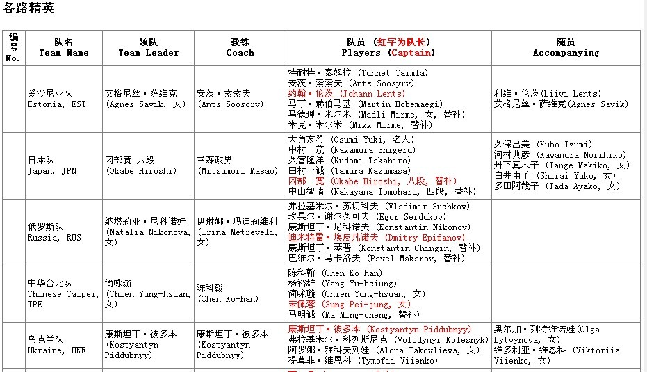
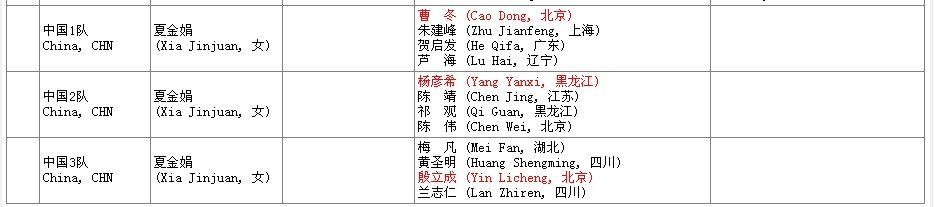
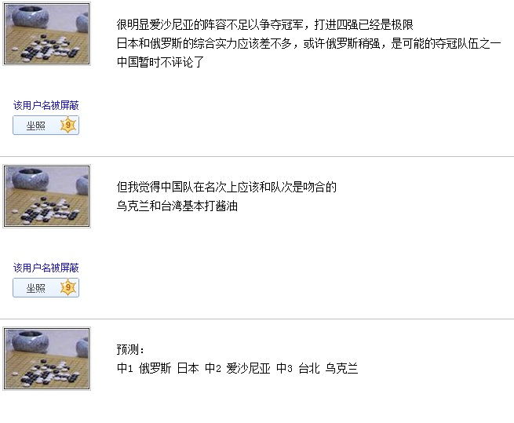

2012中国五子棋国际团体公开赛赛程及参赛队员名单
#1 <font color="red">2012中国五子棋国际团体公开赛赛程及参赛队员名单</font>作者：第五象限 发表时间：2012-4-28 22:06:52
http://www.ljrenju.cn/news/Chn2012/cnto2012.htm
规则：山口规则 时限：135分钟+30秒/手
红色为队长



［ 小红眼镜 于 2012-4-28 22:18:43 时花20金币送鲜花一朵］
［ 烟雨淋晨尘 于 2012-4-28 22:42:57 时花20金币送鲜花一朵］
［ 烟雨淋晨尘 于 2012-4-28 22:43:10 时花20金币送鲜花一朵］
［此帖子已被 梧桐风 在 2012-4-29 15:28:53 编辑过］
#2 Re:2012中国五子棋国际团体公开赛赛程及参赛队员名单作者：第五象限 发表时间：2012-4-28 22:08:41
话说有直播么？
［此帖子已被 第五象限 在 2012-4-28 22:23:49 编辑过］
#3 Re:2012中国五子棋国际团体公开赛赛程及参赛队员名单作者：南京小飞机 发表时间：2012-4-28 22:26:59
千呼万唤……#4 Re:2012中国五子棋国际团体公开赛赛程及参赛队员名单作者：烟雨淋晨尘 发表时间：2012-4-28 22:42:37

#5 Re:2012中国五子棋国际团体公开赛赛程及参赛队员名单作者：暮雨迟 发表时间：2012-4-28 23:23:06
期待直播
#6 Re:2012中国五子棋国际团体公开赛赛程及参赛队员名单作者：问题不大 发表时间：2012-4-28 23:29:14
期待直播#7 Re:2012中国五子棋国际团体公开赛赛程及参赛队员名单作者：冰雪笑醉 发表时间：2012-4-28 23:43:44
 中国队加油吧！
中国队加油吧！#8 Re:2012中国五子棋国际团体公开赛赛程及参赛队员名单作者：凝霜 发表时间：2012-4-28 23:49:58
静候佳音。。。期待凯旋。。。
#9 Re:2012中国五子棋国际团体公开赛赛程及参赛队员名单作者：屏蔽 发表时间：2012-4-29 0:03:32
#10 Re:2012中国五子棋国际团体公开赛赛程及参赛队员名单作者：没事摆石子玩 发表时间：2012-4-29 1:04:56
如果中村确定是2台 看好他取得高分 全胜甚至都有可能 毕竟备战得很深入这次日本 团体冠军必然在中1 日本 俄罗斯之间产生。。中国的优势并没想象得那么大 一切都有可能#11 Re:2012中国五子棋国际团体公开赛赛程及参赛队员名单作者：冰魔 发表时间：2012-4-29 8:32:33
中国必定第一。前4占2
#12 Re:2012中国五子棋国际团体公开赛赛程及参赛队员名单作者：第五象限 发表时间：2012-4-29 9:12:05
励精连珠教室上说是从中国棋院在线得到的信息 但是在中国棋院在线并未找到相关内容啊 求解释#13 Re:第五象限【==Re:2012中国五子棋国际团体公开赛赛程及参赛队员名单==】作者：釣鱼岛岛主 发表时间：2012-4-29 10:19:46
引用：很重要吗？其实我也第一时间看了中国棋院在线，有消息就行了。
原文由 第五象限 发表于 2012-4-29 9:12:05 :
励精连珠教室上说是从中国棋院在线得到的信息 但是在中国棋院在线并未找到相关内容啊 求解释
#14 Re:釣鱼岛岛主【==Re:第五象限【==Re:2012中国五子棋国际团体公开赛赛程及参赛队员名单==】==】作者：簡單 发表时间：2012-4-29 11:31:21
引用：。中国队加油！！当然很重要啊。他们领导发过言了：除了中国棋院的官网第一时间公布的消息可信，其他的消息都是不可靠的。
原文由 釣鱼岛岛主 发表于 2012-4-29 10:19:46 :引用：很重要吗？其实我也第一时间看了中国棋院在线，有消息就行了。
原文由 第五象限 发表于 2012-4-29 9:12:05 :
励精连珠教室上说是从中国棋院在线得到的信息 但是在中国棋院在线并未找到相关内容啊 求解释
#15 Re:2012中国五子棋国际团体公开赛赛程及参赛队员名单作者：梧桐风 发表时间：2012-4-29 15:26:49
 还是有不少看头的啊
还是有不少看头的啊#16 Re:2012中国五子棋国际团体公开赛赛程及参赛队员名单作者：棋心愉悦原点 发表时间：2012-4-29 18:40:03
期待直播·中国队加油#17 Re:2012中国五子棋国际团体公开赛赛程及参赛队员名单作者：小帮帮 发表时间：2012-4-29 20:19:56
虽然中国队这次阵容强大，但还是觉得参赛国家和人数少了点，难道这就是传说中的“浓缩的都是精华”？
#18 Re:小帮帮【==Re:2012中国五子棋国际团体公开赛赛程及参赛队员名单==】作者：屏蔽 发表时间：2012-4-29 23:37:21
引用：
原文由 小帮帮 发表于 2012-4-29 20:19:56 :虽然中国队这次阵容强大，但还是觉得参赛国家和人数少了点，难道这就是传说中的“浓缩的都是精华”？
上届也是这么多 历来基本都这么多
#19 Re:2012中国五子棋国际团体公开赛赛程及参赛队员名单作者：第五象限 发表时间：2012-4-30 10:22:49
最终名单兰志仁梅凡黄圣明的台次相互交换了一下